Proceso que se siguio para llegar al prototipo final
Ideas iniciales
Concepto que se siguio:
Al comenzar, tras participar en el juego de carreras de caballos con todos los compañeros de clase, nuestro objetivo principal fue desarrollar un juego multijugador con controles lo más sencillos posible. La idea era priorizar una experiencia de juego ágil y divertida, enfocándonos en la simplicidad para asegurar una dinámica rápida y entretenida.
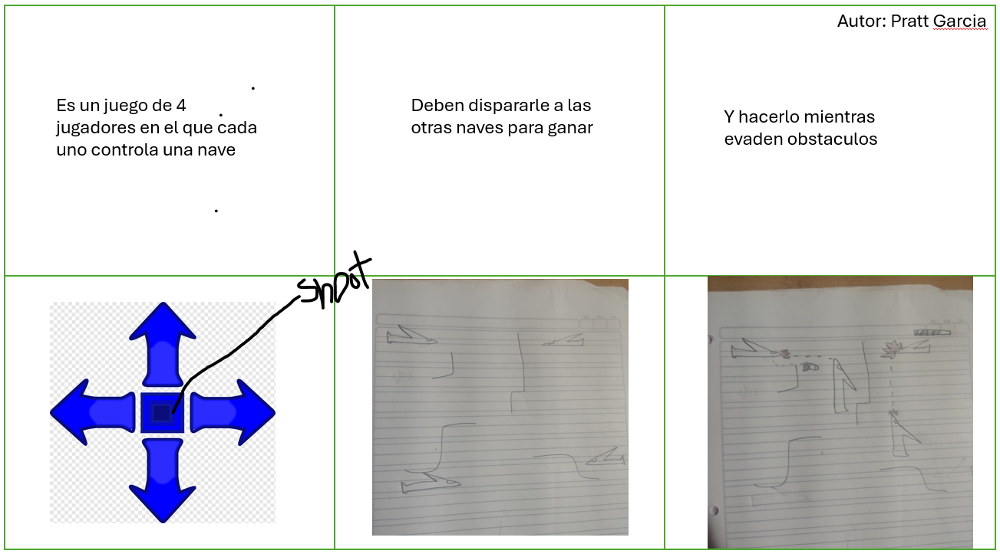
Aviones y disparos
Al inicio se penso en que no necesariamente los controles debian ser simples, por lo que pensamos en juegos con un control de movimiento
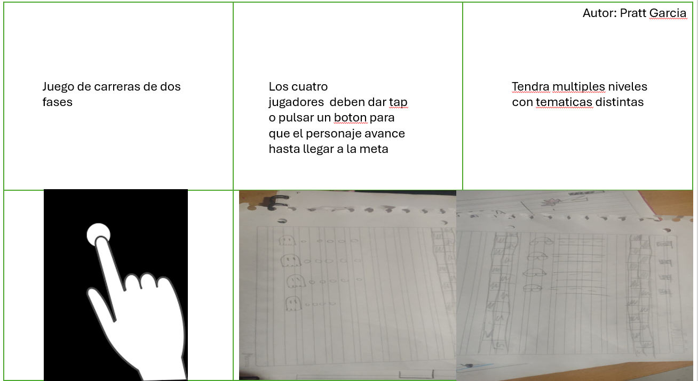
Juego de carreras
Inspirado en el juego de carreras jugado en clases, quisimos probar lo mismo pero implementando varios niveles con distintas tematicas
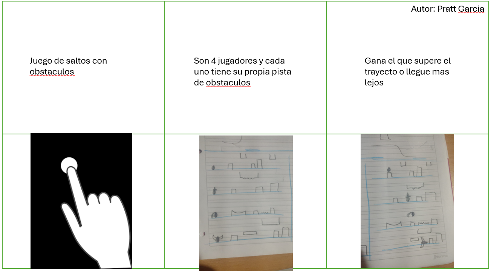
Geometry dash multijugador
Manteniendo la jugabilidad sencilla ya que solo requiere que se presione un boton o la pantalla, pensamos en un geometry dash de muchos jugadores
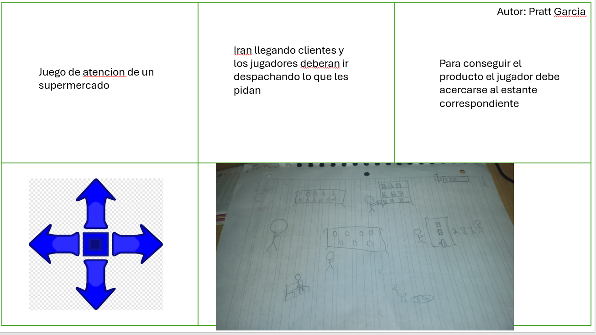
Atencion al cliente cooperativa
Con controles de movimiento simples se puede hacer un juego que explore un escenario simple en el que se cumplan diferentes roles
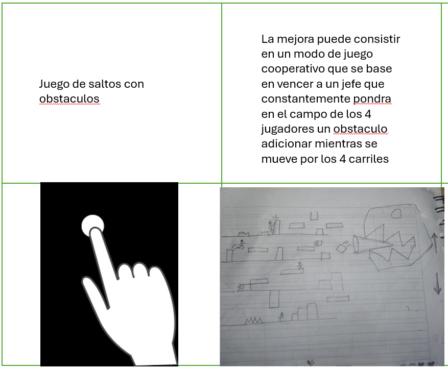
Juego de saltos con obstaculos y jefe final
Es basicamente un geometry dash, se juega con un solo boton pero al final se debe eliminar un jefe en grupo
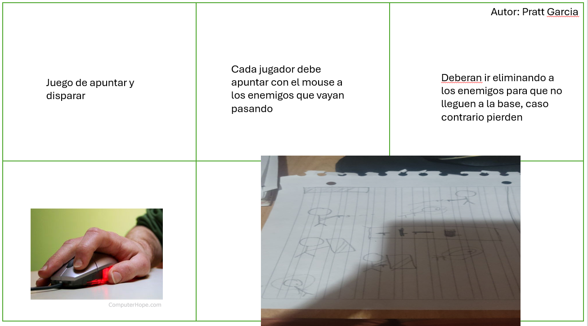
Tower defender
Un juego en el que cada jugador esta en una esquina, con el mouse apunta y dispara para que lo enemigos no crucen, algo complicado pero la idea
de usar el mouse era interesante
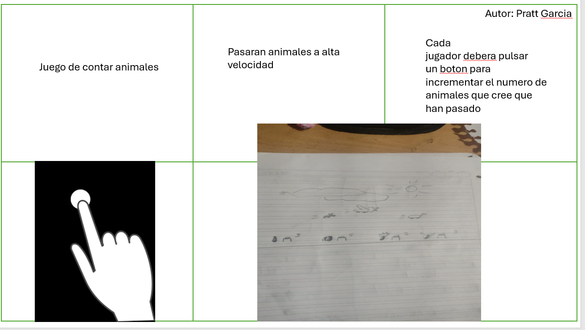
Conteo de objetos
Varios jugadores se conectan a una misma sola con el objetivo de contar animales que pasan a mucha velocidad, se juega con un boton y es
relativamente simple de realizar
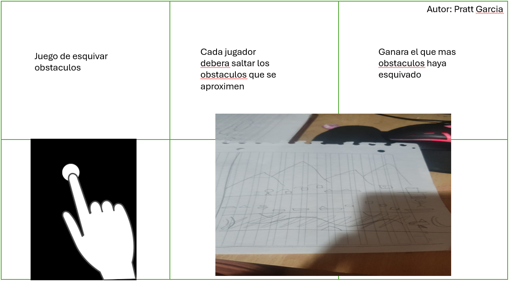
Esquivar obstaculos de la pantalla
Cada jugador mueve hacia arriba o abajo su personaje con el objetivo de que no lo choque nada, simple de implementar aunque el diseño
de niveles puede ser extenso
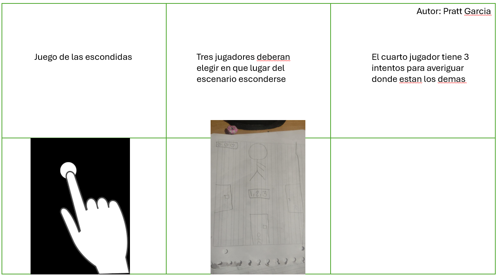
Escondidas
Un grupo de jugadores debera seleccionar en que lugar del mapa ocultarse y otro grupo debe seleccionar en que lugar buscar para encontrarlos,
los controles serian muy simples ya que seria solo seleccionar objetos en escenarios
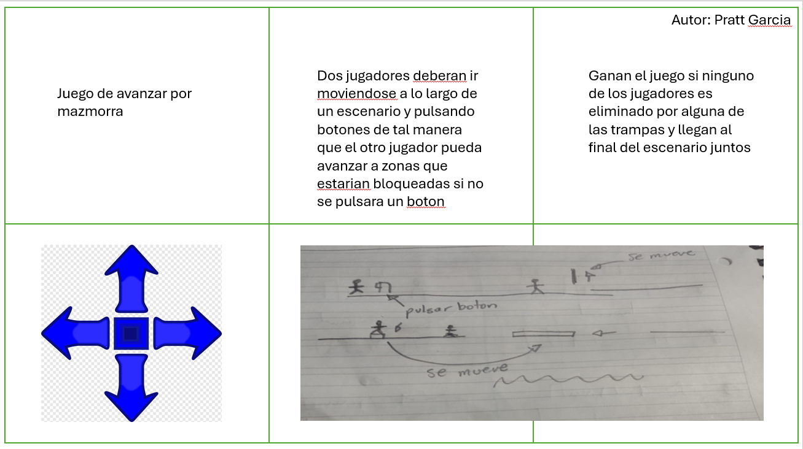
Movimiento y accion colaborativa
Los jugadores se deberan mover a lo largo del mapa y resolver puzzles para dejar pasar al otro jugador algun obstaculo, algo mas complicado
pero interesante en conjunto con algunos jugadores
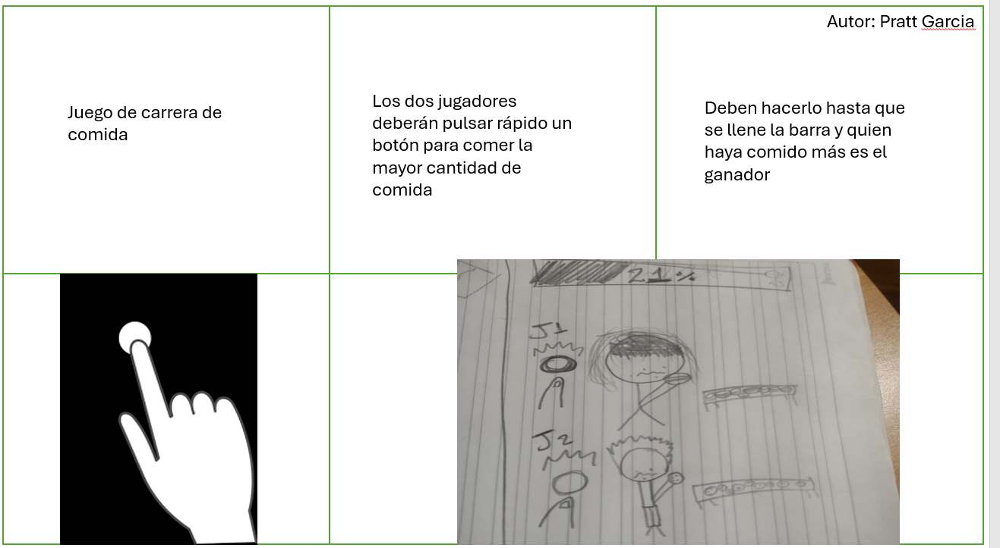
El que presiona mas rapido gana
Juego simple de competencia de comida, dos equipos de varios jugadores que deberan presionar rapido sus pantallas para que su
jugador coma lo mayor posible y ganar, buen juego para gran cantidad de jugadores
Las 3 ideas que nos parecieron mas interesantes
Concepto que se siguio:
Posterior a la lluvia de ideas, nos decidimos por las 3 que mas nos parecieron llamativas,principalmente porque a estas ideas se les pueden añadir muchas cosas adicionales
como boosts, habilidades especiales, algun gimmick especial para cada jugador, etc. Sin embargo, luego de haber tenido una reunion con el profesor entendimos un concepto que habiamos pasado por alto y es que el
juego que fuesemos a armar debia ser para una gran cantidad de jugadores, los juegos que habiamos propuesto hasta el momento estaban pensados para ser solamente de 4 jugadores pero esa no era la idea, por lo que
este paso mas nos sirvio para darnos cuenta de que debiamos enfocar la idea de mantenerlo simple y divertido pero para una cantidad de jugadores mucho mayor.
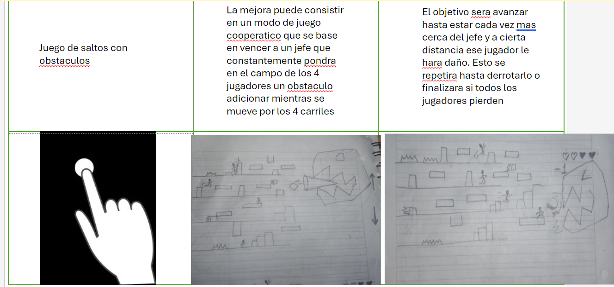
Juego de saltos con obstáculos
Este juego es una carrera para hasta 4 jugadores, en la que deben superar obstáculos saltando. Cada jugador controla su personaje desde un dispositivo móvil, con la única acción de tocar la pantalla
para saltar y evitar los obstáculos. Para hacer el juego más desafiante, se podrían añadir jefes que los jugadores deben derrotar colaborativamente, mientras siguen esquivando los obstáculos que estos lanzan.
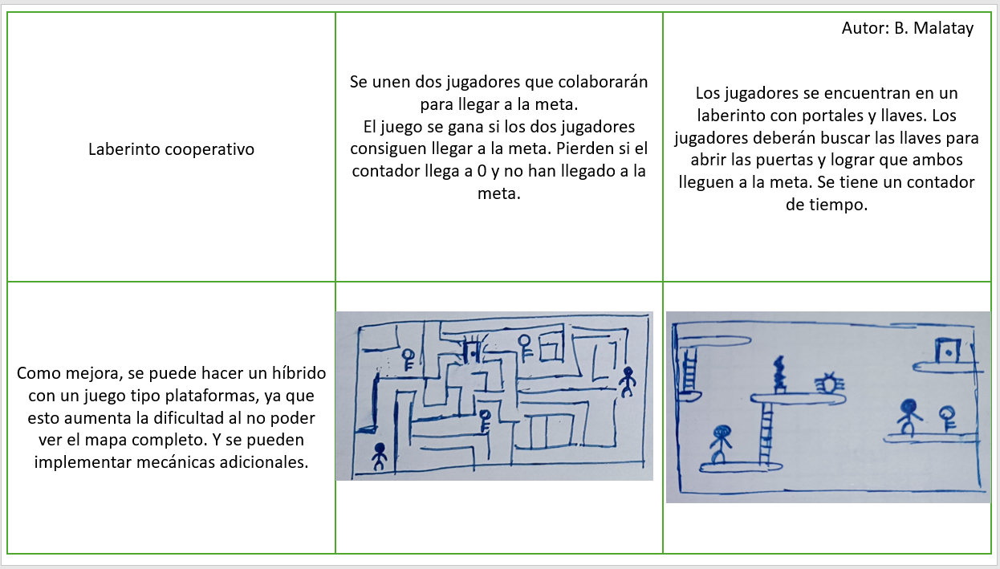
Laberinto cooperativo
ste juego se desarrolla en un laberinto donde dos jugadores deben trabajar en equipo para escapar a través de un portal oculto en el mapa. Cada jugador comienza en una ubicación diferente y se enfrenta a varios obstáculos y áreas bloqueadas, accesibles solo con llaves. La colaboración es esencial, ya que los jugadores deben encontrar y usar estas llaves para desbloquear los caminos y avanzar hacia el portal que les permitirá completar el nivel.
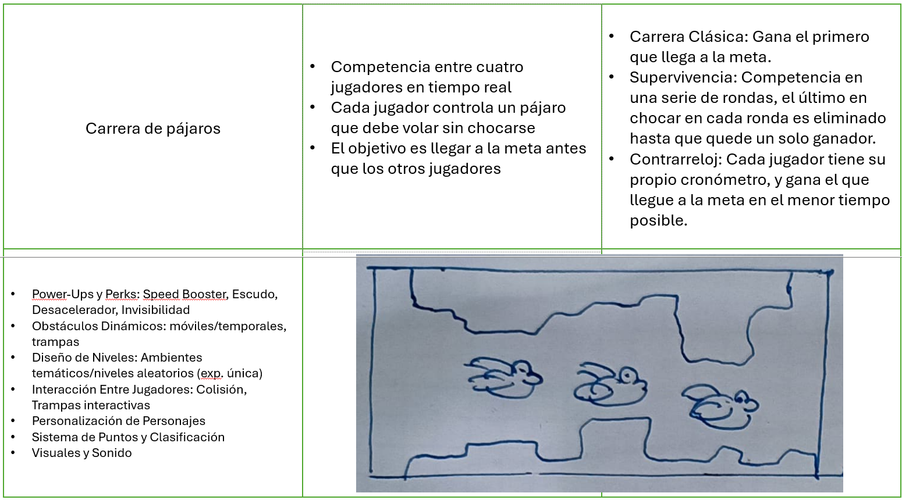
Carrera de pájaros
En este juego multiplayer, hasta cuatro jugadores compiten en tiempo real controlando pájaros que deben volar a través de una serie de obstáculos sin tocar el suelo, el techo, ni los obstáculos mismos. Con modos de juego como carrera clásica, supervivencia y contrarreloj, los jugadores podrán recoger power-ups, enfrentar obstáculos móviles y trampas, y personalizar sus personajes. Con niveles generados aleatoriamente y temáticas variadas, cada partida ofrece una experiencia única y desafiante, garantizando diversión y competencia en cada vuelo.
Prototipo 1
Concepto que se siguio:
Tratamos que usar uno de los enfoques que planteamos en la lluvia de ideas con el objetivo de llevar ese enfoque a un escenario en el que hubieran muchos
mas jugadores, quisimos expandir el escenario normal de uno de esto juegos pero mantenerlo lo mas simple posible, aun asi al recibir retroalimentacion nos encontramos con un bloqueante algo grande
que no nos permitio seguir con la idea y fue basicamente el servidor que se usaria para jugar. Se nos menciono que el servidor era muy inestable y con una conexion que dejaba mucho que desear por
lo que un juego que dependia de la presicion y el timing de ciertas acciones asi como una actualizacion rapida del estado de los jugadores simplemnete se iba a ver muy afectado por este bajo rendimiento
, es por esto que optamos por conservar la idea de disparos pero desde un enfoque completamnete diferente que se explicara mas adelante.
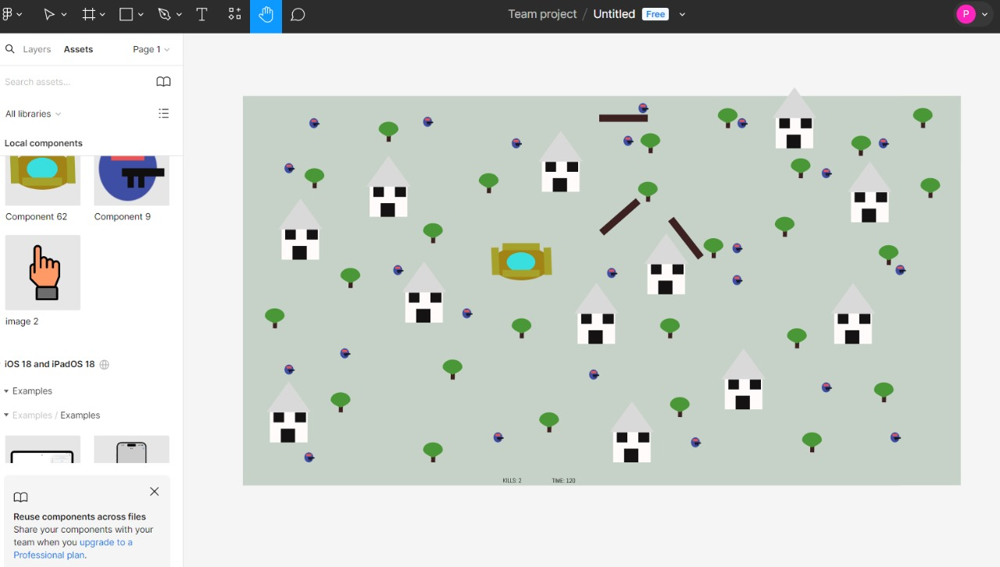
Battle Royale para mas de 50 jugadores
Este juego es sencillo pero divertido, basado en un gran mapa con obstáculos para cubrirse. Los jugadores solo tienen dos controles: mantener presionada la pantalla para moverse y tocar la pantalla para disparar. Mientras no toquen la pantalla, sus personajes giran en 360 grados. Para moverse, deben esperar a que su personaje apunte en la dirección deseada y mantener presionado; para disparar, solo necesitan un toque en el momento adecuado. La estrategia radica en apuntar y disparar en el momento justo para eliminar a los oponentes.
Prototipo 2
Concepto que se siguio:
Con la idea de bajar significativamente la exigencia del juego hacia el servidor, buscamos alternativas pudieran cumplir con la espectativa de la cantidad grande de jugadores y
mantenga la experiencia de juego de forma mas divertida. Por eso si no podiamos usar algo que requiriera de mucha precision entonces buscariamos algo que requiriera de una sola accion simple mientras que todo lo demas
ocurria de manera "pregrabada" en el diseño de niveles. Gracias a esto se llego a la idea de un juego cooperativo para muchos jugadores que se basa en la destruccion de misiles que se dirigen al jugador, esto aprovecha
la baja calidad del servidor y permite a la vez que muchos jugadores interactuen en una misma tarea. La unica accion que realizarian los jugadores es la de presionar la pantalla de su movil como en la carrera de caballos que se
jugo al inicio de clases, pero esta vez con un objetivo distinto.
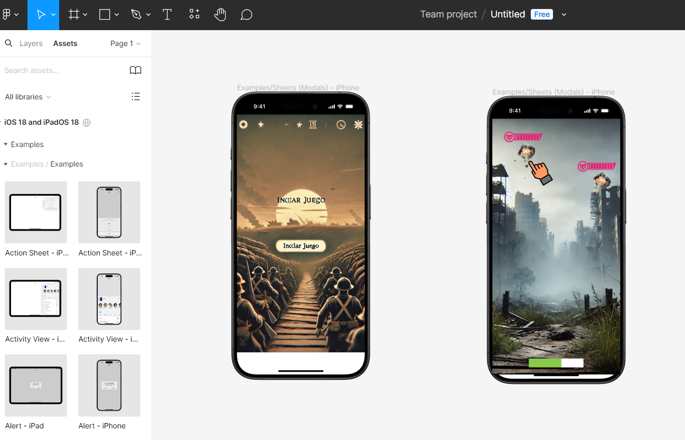
Destruye los misiles lo mas rapido que puedas!
El juego es sencillo: en un mismo servidor, los jugadores ven un mapa donde aparecen misiles de manera repentina. Para evitar que los misiles impacten, cada jugador debe tocar la pantalla de su dispositivo móvil sobre los misiles para destruirlos.
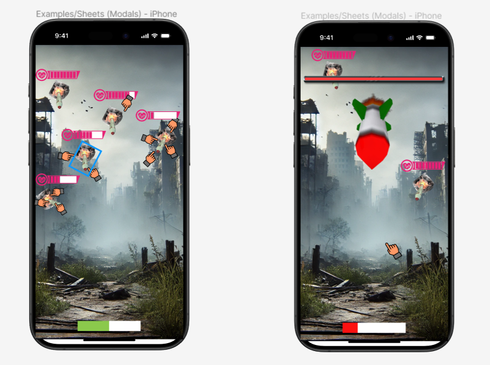
Presiona lo mas rapido que puedas!
Lo desafiante del juego radica en que los misiles tienen barras de vida extensas, por lo que unos pocos toques no son suficientes para destruirlos. Los jugadores deben unirse y coordinarse para reducir la vida de todos los misiles lo más rápido posible antes de que impacten. El juego tiene dos etapas: primero, la aparición de varios misiles, y después, un misil gigante con más vida y mayor velocidad, que requiere aún más cooperación para ser destruido.
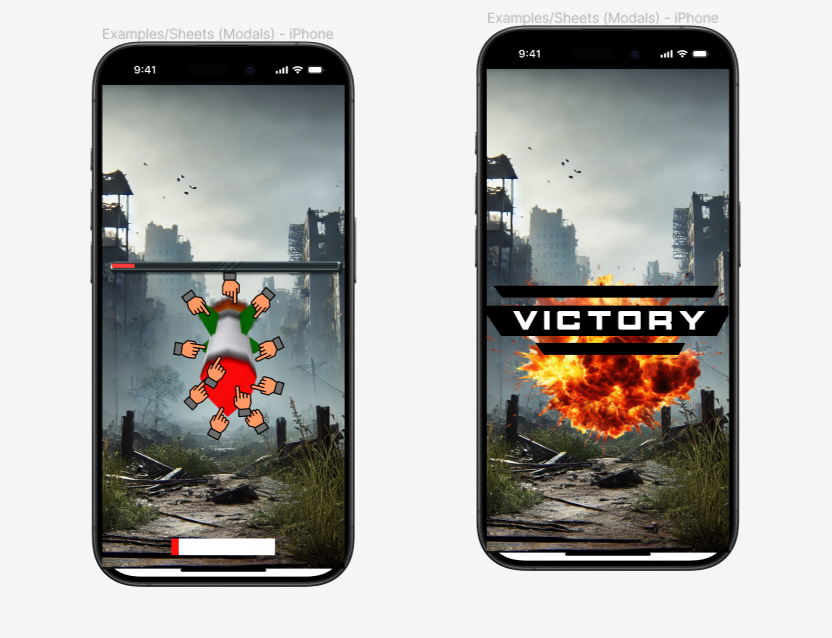
Victoria!
Cuando la barra de vida del misil final se agota, el juego concluye con un gran letrero de victoria, indicando que los jugadores han logrado superar el desafío juntos.
Cronograma del Proceso de Desarrollo Iterativo
El desarrollo del juego se dividió en varias fases clave. Cada fase se centró en mejorar distintos aspectos del juego basándonos en pruebas y retroalimentación obtenida en cada iteración.
Semana 1: Definición del Concepto y Requisitos Iniciales
Objetivo:
Definir el concepto del juego y los requisitos técnicos necesarios para implementarlo en un servidor con limitaciones.
Actividades:
Reunión inicial para discutir y concretar la idea de un juego cooperativo centrado en la destrucción de misiles.
Identificación de las limitaciones del servidor y establecimiento de requisitos simples para maximizar el rendimiento.
Semana 2: Diseño inicial
Objetivo:
Crear un diseño preliminar del juego y desarrollar un prototipo básico.
Actividades:
Implementación de la mecánica de toque simple para la destrucción de misiles.
Desarrollo de la barra de vida para los misiles y su reducción con cada toque.
Diseño de los fondos del juego.
Semana 3: Ajustes y Mejoras
Objetivo:
Realizar ajustes sobre el prototipo.
Actividades:
Revisión del rendimiento del servidor.
Ajustes en la velocidad y frecuencia de aparición de misiles.
Corrección de errores identificados durante las pruebas.
Semana 4: Diseño e Implementación de la Segunda Iteración
Objetivo:
Introducir la mecánica del misil gigante.
Actividades:
Creación e integración del misil gigante con su barra de vida extendida.
Ajustes en la velocidad de los misiles y la dificultad general.
Semana 5: Pruebas y correcciones
Objetivo:
Refinar el juego basado en los comentarios obtenidos y prepararlo para la versión final.
Actividades:
Revisión del rendimiento y jugabilidad.
Ajustes finales en la dificultad del misil gigante.
Implementación de indicadores visuales de victoria al completar el juego.
Semana 6: Optimización del juego
Objetivo:
Mejoras finales del juego.
Actividades:
Optimización gráfica.
Mejora en la interfaz de usuario.
Adición de efectos visuales al vencer un misil.
Revisión y aseguramiento de la calidad del prototipo final.